Analyze institutional options flow, dynamic gamma walls, and monetary CVD tick-by-tick.
Stop guessing the market direction and start seeing the actual market structure. Built for live analysis and high-throughput historical replay using your local IBKR data feed.
Most retail traders enter blind on lagging chart indicators. GEXPIT exposes the actual mechanical forces moving SPX—dealer inventory, dynamic gamma walls, and signed monetary flow in real time.
Where is institutional money committing right now?
Isolate multi-million dollar sweeps, distinguish Call vs. Put aggressive buying, and follow true directional volume instead of lagging candles.
Where are market makers heavily concentrated?
Map the complete 5-Greek chain (GEX, VEX, DEX, CEX) across every strike to identify concrete support and resistance levels.
How will dealers react if the market moves 10 points?
Watch Dynamic Gamma walls recalculate in real time as Spot moves, anticipating forced dealer buying or selling before it hits the tape.
Should I fade the range or follow the breakout?
Know immediately if you are in a range-damping cushion or a high-velocity volatility cascade based on Spot vs. Zero Gamma and Vol Trigger.
How can I master market structure without risking real capital?
Replay past sessions tick-by-tick up to 300x speed, or rewind intraday during live trading to analyze morning setups with zero hindsight bias.
What is actually trading? Visualize the concentration of options volume and isolate the large institutional sweeps moving the market.
Visualize SPX 0DTE gamma concentration, options volume and directional flow across strike and time.
Select from 10 distinct visualization modes categorized into two official families: Gamma (GEX) (Linear, Logarithmic, 30m Rolling) for structural dealer risk, and Order Flow & Volumes for direct volume pressure. Rendered natively on pure OLED black at 60 FPS.
Track liquidity across three lateral volume profiles: Daily Volume Profile (all-day session volume), Rolling Volume Profile (customizable across 7 timeframes: 1m, 5m, 10m, 15m, 30m, 60m, 120m), and Total Volume with 3-level HVN/LVN liquidity grading. Slices include dedicated Call Flow & Put Flow time-series with multi-metric toggles (Contracts, Dollar Notional $, Delta Flow) and Moneyness filters (ALL, OTM, NTM ±5pt, ITM).
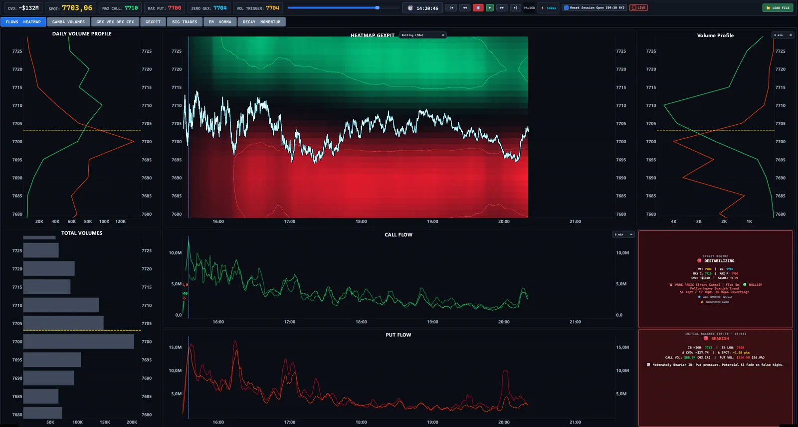
Continuous interpolated flow showing real-time directional order flow pressure without discrete step artifacts.
Smooth Flow maps continuous Call and Put volume distribution along the strike axis as price trades through it, revealing whether market participants are actively reinforcing liquidity or withdrawing bids.
Eliminate visual clutter with Dual Panels—splitting the terminal into synchronized Call (top, emerald green) and Put (bottom, crimson red) screens. Switch to Dominance to eliminate ATM blackouts: strikes glow with the real gross volume while displaying the dominant faction's pure color without algebraic cancellation.
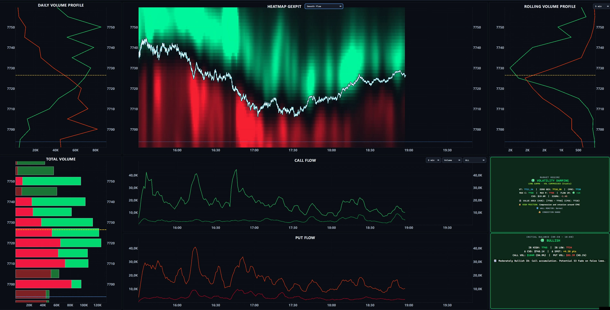
Weight traded options volume by directional sensitivity rather than just gross contract counts.
The Delta Dominance mode weights traded volume by absolute Delta (|Δ| × Volume), revealing where Market Makers face genuine delta-hedging risk across out-of-the-money strikes rather than just premium spent.
When high-volume strikes trade far from Spot with low delta, conventional volume heatmaps display deceptive bright zones. Delta Dominance filters out low-delta noise, highlighting exactly where dealers must dynamically rebalance SPX shares or futures on underlying price shifts.
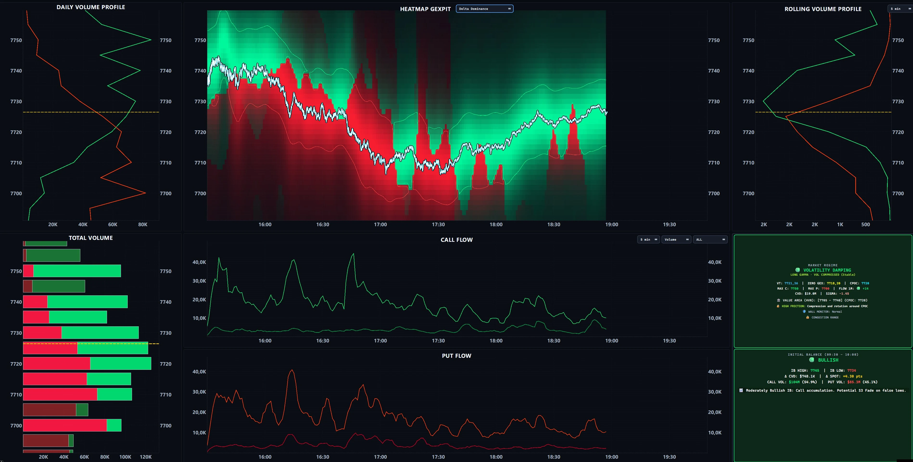
Filter high-notional options trades and assess potential dealer-hedging sensitivity across the entire SPX chain.
Isolate institutional block trades and aggressive sweeps from retail noise. View executions plotted directly against the Spot line as distinct visual markers—green squares for Calls, red squares for Puts—with square size strictly scaled to contract volume.
Filter institutional flow with precision: switch between Dollar Notional Value ($) (from $100K up to multi-million dollar sweeps) and Contract Volume (from 50 to 10,000+ contracts) using responsive stepping controls.
Directly beneath the Spot chart, dedicated Call Flow and Put Flow timelines remain time-linked to the same millisecond axis, confirming whether an isolated block trade triggers sustained directional momentum or immediate absorption.
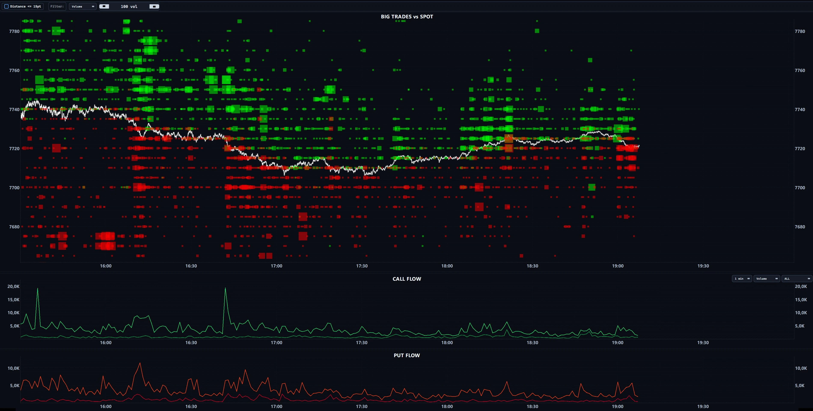
Eliminate far-OTM lottery tickets and isolate trades that force immediate dealer hedging.
Toggle the Distance ≤ 15pt filter with one click to isolate blocks traded right at the money—eliminating far-OTM speculative noise. Hover over any institutional block for instant X-Ray details: exact second, strike, option premium, underlying Spot price at fill, volume, and total dollar notional.
Trades executed near Spot carry the highest gamma and dollar delta impact. By applying the 15-point proximity clamp alongside the 200+ volume threshold, the chart filters out 90% of chain noise, highlighting the exact strikes where market makers must aggressively react.
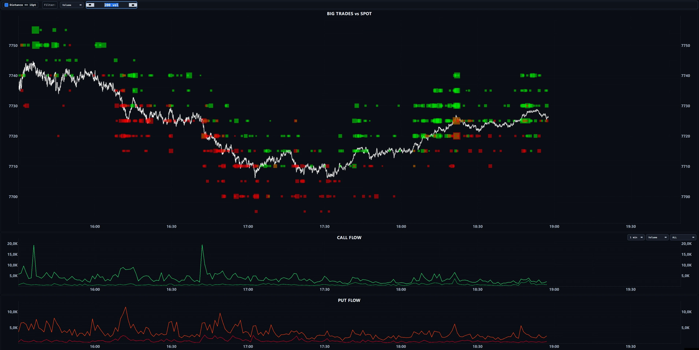
Where is the gamma concentrated? Map the full profile of dealer exposure and watch the walls shift in real time as the underlying moves.
Map the full Greeks profile simultaneously across the SPX chain.
Analyze Total Volume, GEX (Gamma), VEX (Vanna), DEX (Dollar Delta), and CEX (Charm) side-by-side on five time-synchronized strike panels. All profiles are calculated instantly via a Numba JIT-compiled BSM engine, featuring 3-level density color grading to isolate High-Volume Nodes (HVN) and friction zones from thin liquidity (LVN).
Filter dealer exposures across 7 rolling intervals (1m, 5m, 10m, 30m, 60m, 120m, All Session). Identify whether today's key walls represent persistent morning accumulation or rapid defensive re-hedging deployed in the last 15 minutes.
No complex calculus required: GEX locates where market makers dampen or amplify price moves; VEX spots vulnerability to IV shocks; DEX measures underlying share-hedging needs; and CEX captures accelerated delta-bleed as 0DTE contracts expire toward the final hour.
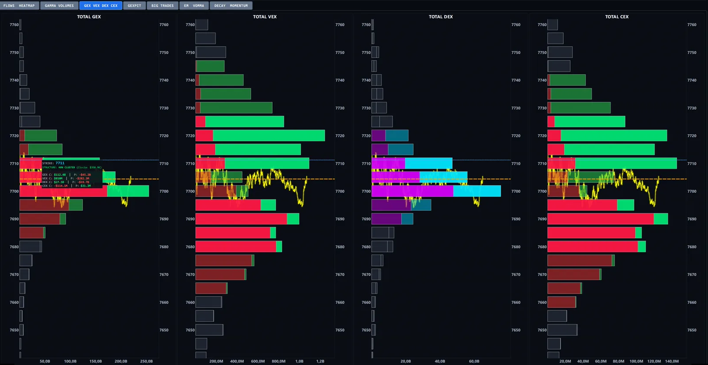
Zero-centered axis with Puts expanding left and Calls expanding right across all five Greek panels.
Toggle display mode instantly with top toolbar buttons: switch to Split Centered Mode to instantly spot directional imbalance strike-by-strike. Rather than visually unstacking combined bars, the zero axis makes skew and Call vs. Put dominance immediately obvious across Volume, Gamma, Vanna, Delta, and Charm.
Split Centered Mode isolates whether an apparent gamma wall is balanced or heavily one-sided. When a single strike displays massive Call GEX expanding right with virtually zero Put GEX on the left, it acts as an asymmetric barrier with distinct hedging dynamics.
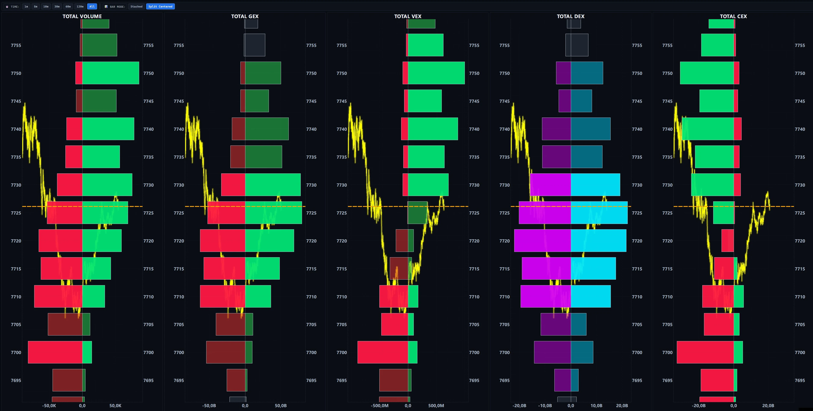
Reprice the traded 0DTE book as Spot and time evolve.
Switch seamlessly between three distinct exposure modes: Net GEX (intraday net balance from traded flows), Split Total GEX (side-by-side Call and Put bars), and Dynamic GEX (GEXBot Classic Style)—which reprices session-wide strike volume at the live Spot price and current minutes to close using Black-Scholes.
Assess directional dealer exposure strike-by-strike: positive green bars denote dealer long gamma (volatility suppression and mean reversion), while negative red bars indicate short gamma pockets where dealer hedging accelerates market momentum.
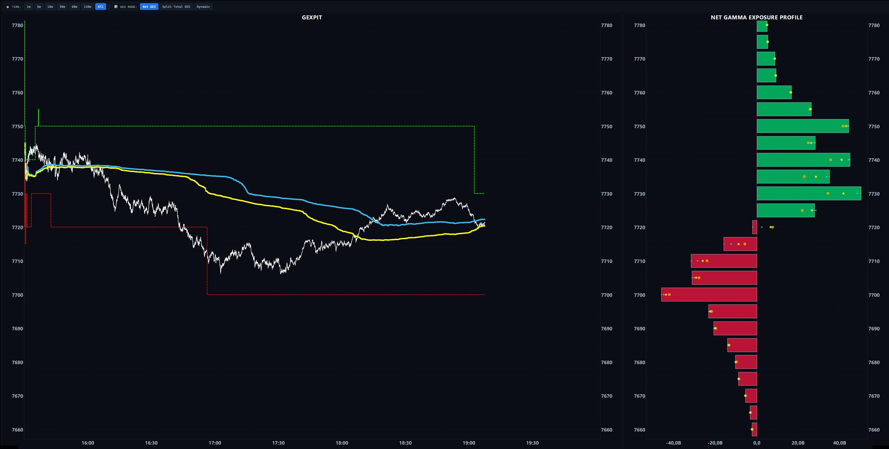
Side-by-side Call and Put gamma profiles across all active SPX strikes.
In Split Total GEX mode, Call gamma expands to the right (green) and Put gamma expands to the left (red) on a zero-centered baseline. This unmasks hidden friction zones where both Calls and Puts are heavily stacked on the same strike, which would otherwise algebraically cancel out in a simple net profile.
Filter exposure dynamically across 7 rolling timeframes (1m to 120m, or All Session) to isolate whether gamma buildup represents opening institutional blocks or defensive late-day adjustments.
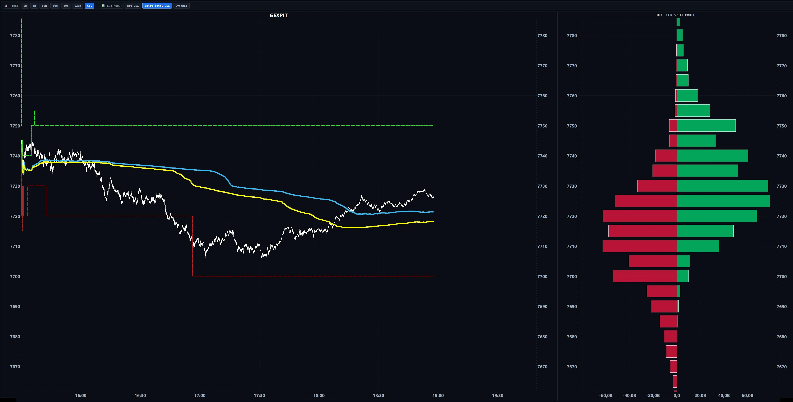
Reprices cumulative traded volume at current Spot and time to close via live Black-Scholes.
Track wall migration at a glance: multi-colored markers overlaid directly on strike bars show where gamma stood 1m (white), 5m (cyan), 15m (yellow), and 30m (orange) ago. Instantly see whether institutional walls are holding firm, migrating to new strikes, or eroding.
The left panel plots Spot alongside five core quantitative levels: Zero Gamma Flow (dashed yellow, local crossover), Zero Gamma Macro (solid orange, macro flip), Vol Trigger (dashed light blue, scanned across price space), plus Call Wall and Put Wall.
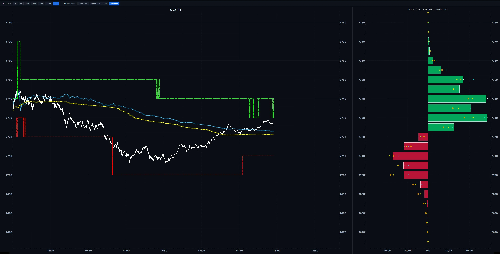
How does that positioning evolve? Track monetary capital flows, volatility regimes, and straddle decay dynamically.
Contracts alone do not capture true directional pressure. High gamma makes every contract a potential hedging event.
GEXPIT tracks signed options flow using Monetary Notional Value ($) classified via the Lee-Ready algorithm on a 250ms midpoint window, splitting midpoint executions 50/50 to prevent artificial directional bias.
Track where maximum volume is concentrating in real time: dynamic dashed lines on the Spot chart follow the exact strikes with the highest Call (green) and Put (red) volume across 9 selectable timeframes (1m, 3m, 5m, 10m, 15m, 30m, 60m, 120m, or Full Session).
Tailor your terminal to your edge: switch calculation metrics between Notional Value ($), Volume (contracts), or Delta Flow; filter by Moneyness (ALL, OTM, ATM/NTM, ITM); and toggle CVD displays across 4 modes (Call & Put CVD, Call Only, Put Only, or Net CVD Total).
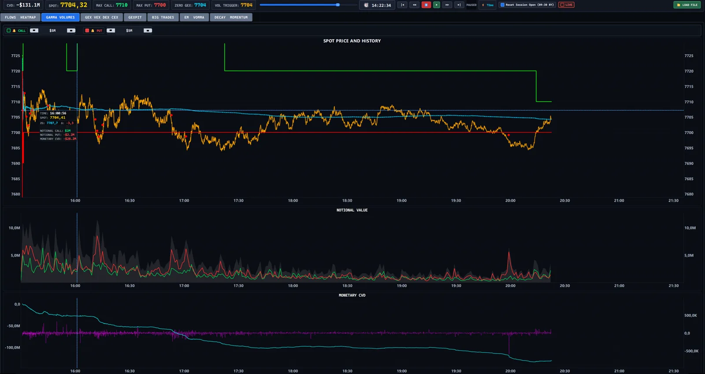
Visual alerts stamped directly onto the price chart at the moment aggressive volume hits the market.
Set custom threshold filters (🔔 CALL and 🔔 PUT) to trigger visual markers directly on the Spot trajectory: 🟢 Green for aggressive Call spikes, 🔴 Red for protective Put surges, and 🟡 Gold Dual Peaks when both explode simultaneously.
Gauge microstructural momentum tick-by-tick via the central CVD Acceleration Oscillator. The bottom panel displays cumulative Net CVD Total, confirming whether aggressive sweep bursts create lasting trend conviction or instant liquidity absorption.
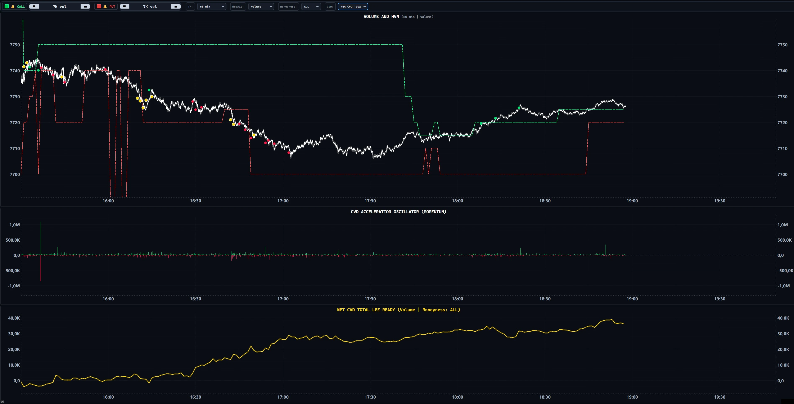
Monitor the Expected Move corridor and ATM implied-volatility behavior in SPX points.
Know your statistical boundaries: compare the certified 09:30 NY Open corridor (anti-spike certified ±1SD, ±2SD, ±3SD horizontal bands) with fluid 30-second rolling dynamic channels to identify statistical overextension.
The lower panel tracks the real-world erosion of options premium: compare the Amber Curve (theoretical mathematical decay decaying toward 0 at the close) against the Cyan Curve (live market ATM straddle price in SPX points).
When the live cyan curve trades significantly above the theoretical amber path, options are pricing heavy event risk. When the live straddle drops below theoretical decay, premium is burning at hyper-speed—ideal for range compression strategies.
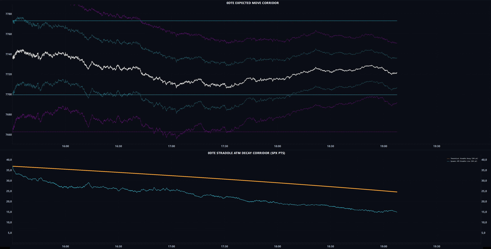
Cross-analyze Spot, 1-minute order sweeps, and the ATM implied volatility Z-score to separate genuine institutional trend days from false break traps.
Isolate institutional sweeps minute-by-minute. Track clean Call volume (green), Put volume (red), and aggregate volume bars right below the clean SPX Spot panel to spot aggressive accumulation before price breaks out.
Detect exhaustion and panic pricing in real time: statistical deviation bands at ±1.5σ and ±2.0σ show whether price dips are accompanied by genuine options hedging panic or if they represent low-volatility traps ready to reverse.
Driven by an incremental Numba-accelerated engine with Peak-Preserving decimation, rendering 500,000+ ticks at 60 FPS while preserving every true market spike and extreme tick.
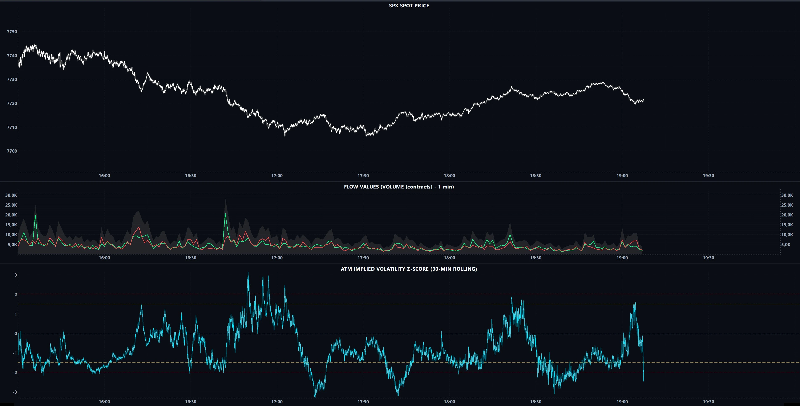
GEXPIT logs every OPRA tick directly to your local PC in high-performance Apache Parquet format. Rewind, pause, and analyze any past session with the exact same visual interface and mathematical precision as the live market. From 1× real-time to 300× hyperspeed. Zero cloud vendor lock-in. 100% private data ownership.
Includes Intraday Live Rewind (scrub backwards during live trading to re-examine morning breakouts or heavy block sweeps, then return to live streaming with a 1-Click Live Snap) and an official 09:30 NY Open Anchor to filter pre-market distortions.
Watch full session replays on our YouTube channel:
WATCH REPLAYS ON YOUTUBEUnderstand the structural environment before placing a trade. Mechanical regime classification driven by the exact physical relationship between Spot, Zero Gamma, and the Vol Trigger.
The boundary between calm and acceleration. Above it, dealers act as shock absorbers; below it, dealers amplify volatility.
The precise price level where total exposure flips to volatility expansion, pinpointed via continuous price-space scanning.
The structural ceiling: maximum positive modeled net-GEX strike acting as primary institutional resistance.
The structural floor: maximum negative modeled net-GEX strike acting as key dealer hedging support.
Long Gamma Cushion. Dealers absorb price swings (buying dips, selling rips). Range compression, low realized volatility, and high mean-reversion probability. Ideal for fading extremes.
Long Gamma Warning. Price approaches structural trigger levels. Swings widen, breakout attempts gain traction, and intraday range begins expanding.
Short Gamma High-Velocity. Extreme sensitivity to short-covering rallies. Dealers are forced to buy underlying aggressively as price ticks up, triggering violent V-shaped surges.
Short Gamma Panic. Price trades below both Zero Gamma and the Vol Trigger. Dealer hedging turns pro-cyclical: every point drop forces more selling, accelerating downside cascades through thin liquidity.
Measured on internal benchmark datasets / test environment.
Join the waitlist to receive your invitation and beta license key.
Download and install the GEXPIT desktop application locally on your PC.
Connect GEXPIT directly to your existing Interactive Brokers TWS or Gateway.
Analyze live markets, record tick data, and replay past sessions.
Commercial pricing announced before public release.
GEXPIT is engineered specifically for Interactive Brokers (IB Gateway). It directly captures the official OPRA SPX options tick stream through the IBKR API. You utilize the standard, low-cost market data subscription you already own with Interactive Brokers, with zero expensive third-party data subscriptions or vendor markups.
Every tick, trade execution, and computed Greeks surface is logged directly on your local machine in high-performance Columnar Apache Parquet format with Write-Ahead Log (WAL) architecture. Unlike cloud-locked web platforms, you hold 100% ownership of your raw and processed data. You build a valuable, private institutional tick archive day after day with zero recurring data archive fees.
Because GEXPIT renders real-time OLED heatmaps at 60 FPS and processes hundreds of thousands of ticks intraday via a Numba JIT-compiled engine, a standard modern PC is required. We recommend at least 8 GB of RAM (to comfortably run GEXPIT alongside Interactive Brokers TWS without bottlenecking memory) and a dedicated GPU with at least 4 GB of VRAM to guarantee zero-latency hardware-accelerated rendering.
GEXPIT features a dual-mode high-throughput replay engine: you can perform Full-Session Replays on any previously recorded day at variable speeds (1x to 300x) with zero data loss. Furthermore, during live market sessions, you can rewind the timeline to re-examine morning Initial Balance breakouts, heavy block sweeps, or key turning points, and then instantly return to live streaming with a single click (1-Click Live Snap). An optional 09:30 NY Open Anchor resets calculations to official regular trading hours.
The heatmap renders Call and Put volume across the SPX strike chain in real time on a pure OLED black background, synchronized with the Rolling Volume Profile. It includes 10 display modes grouped into two families: Gamma (GEX) (Linear, Logarithmic, 30m Rolling) and Order Flow & Volumes (Volume Flow, Smooth Flow, Dominance, Delta Dominance, Call Only, Put Only, and Dual Panels). Dual Panels splits Call and Put activity into two synchronized vertical charts, while Dominance illuminates gross volume without dark spots at the ATM Straddle strike.
In Tab 1 (Flows & Heatmap), you can filter the Rolling Volume Profile across 7 timeframes (1m to 120m). Dedicated lower panels display separate Call Flow & Put Flow curves with multi-metric toggles (Contracts, Dollar Notional $, Delta Flow) and Moneyness filters (ALL, OTM, NTM ±5pt, ITM). The HUD tracks the Initial Balance (09:30–10:00 NY) and continuously diagnoses the active Market Regime (Volatility Damping, Volatility Expansion, Delta Squeeze, Volatility Cascade).
Each trade is classified with the Lee-Ready algorithm using a 250ms quote midpoint window, splitting midpoint executions 50/50 to preserve volume without directional bias. GEXPIT's Monetary CVD weights every execution by actual dollar notional.
Tab 2 overlays Rolling Volume Peaks (dashed green Call and red Put curves) directly on the Spot chart across 9 timeframes (1m to Full Session). Configurable Sweep Alarms (`🔔 CALL` and `🔔 PUT`) plot visual markers directly on the Spot trajectory: 🟢 Green for aggressive Call spikes, 🔴 Red for Put surges, and 🟡 Gold Dual Peaks when both factions trade massive volume simultaneously.
All five exposure panels (Total Volume, GEX, VEX, DEX, CEX) are computed in parallel by a Numba JIT Black-Scholes engine. The toolbar lets you toggle between Stacked Mode (stacked Call/Put bars from zero) and Split Centered Mode (zero-centered axis with Puts expanding left and Calls right), and filter the entire Greeks surface across 7 rolling timeframes (1m to All Session) with 3-level HVN/LVN liquidity grading.
Tab 4 provides three selectable modes: Net GEX (historical accumulated flow), Split Total GEX, and Dynamic GEX (BSM repricing using today's total volume at live Spot and remaining expiry time). Overlaid on the bars are Historical Lookback Balls showing where gamma was 1m (white), 5m (cyan), 15m (yellow), and 30m (orange) ago. The engine plots Spot against Zero Gamma Flow, Zero Gamma Macro, Call Wall, Put Wall, and a dynamically scanned Vol Trigger.
Tab 6 maps the daily statistical playing field by plotting Spot against certified 09:30 NY Open bands (±1SD, ±2SD, ±3SD) and fluid 30-second intraday channels. The lower panel compares the Theoretical Straddle Decay Curve (decaying to zero at 16:00 NY) against the Live ATM Straddle Price in SPX points to identify whether options are overpricing event risk or experiencing accelerated premium collapse. Tab 7 pairs clean Spot price with 1-Minute Flow Values and the ATM Implied Volatility Z-Score (30m rolling) to filter false breakouts.